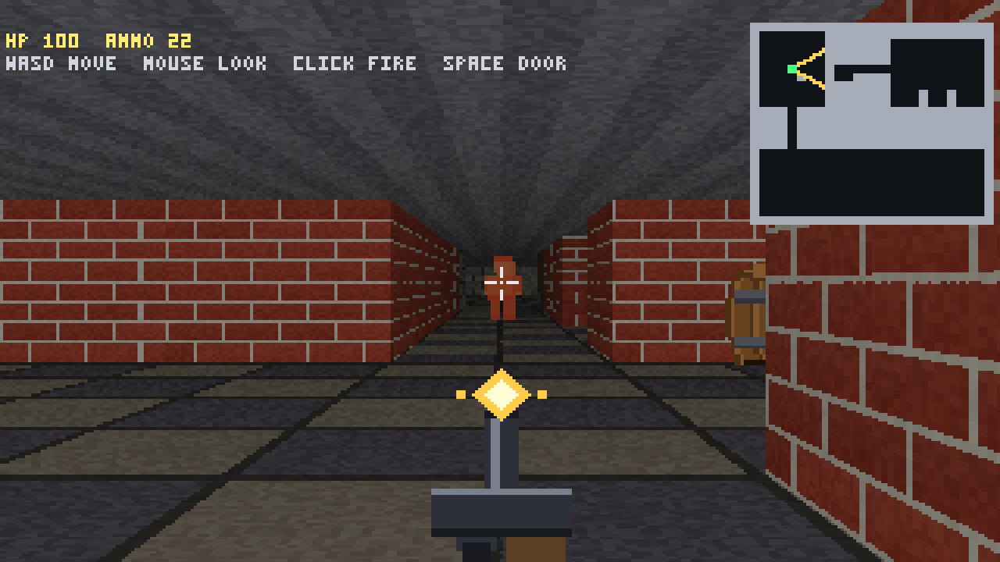

9 November 2026 · Agentic task loop · first-person raycaster
Raycaster Shooter · Sushi 1.5.1 · Tenaz main 8d01939
Tenaz ended in COMPLETE_WITH_GAPS after 6 h 58 min, 46 sessions and 15 of 16 tasks: the first final review stopped without a verdict at its turn and output limits, the second returned CHANGES and added T016 (pillar sprites are never placed in the world), and no review cycle was left to build it. 31 model-written checks pass. Not a clean run: model-written checks leaked vite preview servers, the operator killed them three times, and the memory pressure led to one engine refusal and two context-budget stops. Played by Claude in a browser: all eight Must have items pass, but the enemy never attacks, there is one enemy, no pillar sprites, a second door that opens onto a wall, and no end state.

What was checked
- Runner final state COMPLETE_WITH_GAPS on 9 November 17:52:25.947 UTC: 15 tasks done, T016 todo. Bootstrap produced 15 tasks and 33 requirements on its first attempt. Final review cycle 1 (045) reached the 60-turn steer and ended at 72 turns on an output-limit stop with no verdict; cycle 2 (046, lower reasoning effort) returned CHANGES with verify passing and all 33 requirements covered, R25 by hand, and added T016 because pillar art exists but no pillar is placed in the world. No cycle was left. These are the model-written checks and reviews, not a hidden acceptance suite.
- Runner: Tenaz main 8d01939 (reports 0.6.0), built from main at the merge of Tenaz PR #47 and not released: dsh auto-compaction off, the engine proxy refuses dsh summary requests, dsh gets the user's npm and Playwright caches, and template fixes. Initialized with --vision and --engine load-api, all Tenaz parameters at their defaults; one Sushi process with one prefix-cache entry. No pauses, no edits to run.json, and no edits to model-written code, notes, checks or task cards.
- Not a clean run. The model-written checks/_helper.mjs starts vite preview detached and stops it in a finally block; five browser checks (three T004, two T005) pass their result out of withGame's callback through a promise and then call process.exit while that block is still closing the browser, so each run of them left five servers behind. The operator killed 175 orphaned vite preview process groups at 14:37 UTC (about 2.5 GB RSS) and 150 more at 17:22 UTC (about 2.8 GB RSS), and a 10-minute watcher killed 5 at 17:43 UTC. The run itself was not paused or changed. Tenaz PR #48, after this build, stops such processes after verify.
- Runner events, all handled by Tenaz: 017-builder-T007 got an engine refusal (Sushi's memory admission: a 46,358-token prompt needed about 2,098 MB, 1,983 MB available); Tenaz lowered the context budget from 85,196 to 37,181 and reran the session. 020-builder-T008 and 023-builder-T009 then exceeded the lowered budget (50,960/37,181 and 53,821/40,768) and fresh sessions continued them. The budget was raised step by step after clean sessions and was back at 85,196 after 041. T011 attempt 1 wrote no passing T011 check; 030-builder-T011 and 035-builder-T012 reached the turn budget (60/40) and continuations finished them. Task reviews returned CHANGES once (T011, attempt 2), fixed on attempt 3. 030 and 046 ran at lower reasoning effort after output-limit stops.
- Played on 9 November by Claude with Playwright in headless Chromium against the archived static build (byte-identical to a fresh vite build of the final commit 7cdbcce). Keys and clicks were real Playwright input. Headless Chromium cannot take pointer lock, so an init script made the browser report the lock and mouse turns were sent as mousemove events with movementX to the game's own handler. The debug hook was used only to read state.
- Must have results: walking with collision at walls and the closed door; straight walls at an angle; brick, stone and wood textures; textured floor and ceiling; side and distance shading visible but not measured; the spawn barrel partly hidden behind the right wall edge (22 of 46 columns clipped); Space opens both doors; left click fires with a muzzle flash and ammo count, the hit enemy flashes orange (caught on a frame) and falls on the third hit and stays down.
- Gameplay faults found in play: the enemy walks up, stops close to the player and never attacks, so health stays at 100; the world has one enemy and no pillar sprites (the stone pillars are wall blocks); the second door opens onto a stone wall; there is no win or end screen after the enemy falls; a faint dotted seam runs along the horizon row on near walls. Compared with the 0.6.0 build, the gun no longer reaches the crosshair and the fallen enemy reads as a body. The operator also played it; their impression is not recorded.
- Vision: initialized with --vision. 38 read_image calls across the run, none in error; zero image refusals in the session records.
- Engine metrics: all 936 proxy responses match Sushi summaries one-to-one by (prompt, output, cached) in the single process log; forward-earliest and backward-latest matches agree. One proxy record has no engine response and is excluded: the request Sushi refused in session 017. 7 Sushi summaries are unassigned and excluded: 6 preflight requests and 1 client disconnect when the context budget stopped session 020.
- dsh made no context summaries (no request asked for 65,536 output tokens); the 0.6.0 run had 18.
- Memory: Tenaz's 30-second samples during sessions show pressure up to warning, swap occupancy up to 7.66 GiB and 13.95 GiB swapped in across the run, 8.9 GiB of it in sessions 020, 029 and 045. The orphaned servers are the main cause; this affects wall time and the comparison with the 0.6.0 run.
- Public artifact: the static build (vite build of the final project commit 7cdbcce, base ./, unchanged source) and one capture from it at 1280x720. The prompt is the author's and is not republished; the project, raw logs, journal and sessions stay in the ignored local archive.
Limits of this evidence
Completion is the runner outcome, and here it is COMPLETE_WITH_GAPS. Same brief, model, engine, harness and parameters as the 0.6.0 run, with an unreleased Tenaz build from main. Orphaned vite preview servers from the model-written checks added memory pressure that most likely led to an engine refusal and two context-budget stops, so this run is not a clean measurement of the runner change. It is a single execution, and the two runs differ in more than one setting. The playthrough was by Claude, with mouse turning driven through simulated pointer lock.
Configuration
The model, serving engine and agent used for this execution.
| Field | Value | Detail |
|---|---|---|
| Model · primary | Qwen 3.8 Flash Next · primary · reasoning medium | EXL3 K=2.625 experts, 8-bit dense weights; 16-bit n-gram table, memory-mapped and read from SSD |
| Checkpoint · primary | Qwen3.8-Flash-Next-Sushi-2.6bpw | primary model artifact |
| Runtime | Sushi 1.5.1 · MLX 0.32.3 · One OpenAI-compatible server process for the whole run, started with the same production arguments as the 0.6.0 run: KV8, MTP with MTP-head KV quantization, 512-token prefill chunks, 16384 maximum output tokens, 20 GB SSD prefix cache with --prefix-cache-entries 1, temperature 0, vision on. All 944 logged generation headers report temperature 0, top-p 0.95, top-k 20 and thinking=true. Startup scanned 11 persisted cache entries (about 20374 MB). Sushi refused one request at its memory admission check (session 017). mode | inference engine and exact build |
| Harness | DeepSeek Harness over ACP driven by Tenaz main 8d01939 (reports 0.6.0), an unreleased build 0.2.2-rc.1 | the agent or client that drove the run |
| Runner | Tenaz main · build 8d01939 after 0.6.0 (unreleased) | open-source runner, github.com/aartiles/tenaz · how the runner evolved |
| Hardware | Apple MacBook Pro · 64 GB unified memory | hardware recorded for this execution |
| Workload | Raycaster Shooter · revision 1 | One-shot raycaster brief by @ddalcu, as posted by @Beamsters1, used verbatim as the Tenaz brief (same file as the 0.6.0 run); Tenaz wrote its own verify and task plan. One runner configuration from start to end, with no pauses or configuration changes, but the operator killed orphaned vite preview processes three times. A single execution, not a repeated measurement. |
| Context window | 131,072 tokens | maximum context configured for the serving runtime |
| Repetitions | 1 | executions recorded for this workload; one means an indicative result, not an estimate |
Inference measurements
Engine-side rates for this run. Each figure states its own statistic; figures from different runs are not interchangeable.
| Metric | Value | Definition |
|---|---|---|
| TTFT · median | 1.05878 s | Median engine-reported TTFT across matched responses, from engine timing fields retained by the proxy. · n=936 · Mean 3.23 s. |
| Decode · per-request median | 50.8326 tok/s | Median of per-request output_tokens / engine decode_s across matched responses. · n=936 |
| Decode · output-weighted | 47.301 tok/s | Total matched output tokens divided by the sum of engine decode_s. · n=936 |
| Draft acceptance | 62.7924 % | Sum of accepted MTP draft tokens divided by sum of drafted MTP tokens from matched engine request statistics. · n=936 · 556643 accepted / 886481 drafted tokens. |
| Swapped in during the run | 13.95 GiB | Sum of per-session swap-in from Tenaz's 30-second host memory samples, taken during sessions; host-wide swap I/O, not resident memory. · n=856 · Pressure normal or warning; maximum swap occupancy 7.66 GiB. Mostly from orphaned vite preview servers left by the model-written checks; the host also started with 5.7 GiB of swap in use. |
| Server process memory · peak | 49 GiB | Maximum sampled Sushi process footprint across Tenaz's 30-second memory samples, taken during sessions, rounded by the sampler. · n=856 |
Agent session counters
Agent-wide usage totals. These include reasoning, tool calls and waiting, and are not model decode speed.
| Metric | Value | Definition |
|---|---|---|
| Run elapsed | 417.7 min | Session 001 start after the preflight (9 November 10:54:44.887 UTC) to COMPLETE_WITH_GAPS (9 November 17:52:25.947 UTC); includes tools, checks and retries. · n=1 · 6 h 57 min 41.1 s; no pauses. Memory pressure from orphaned vite preview servers slowed parts of the run. |
| Agent sessions | 46 sessions | All harness sessions: 3 bootstrap, 22 builder, 16 reviewer, 3 replan and 2 final reviewer. · n=1 |
| Sessions ended early | 5 sessions | Sessions with ok=false: one engine refusal (017, rerun), two context-budget stops (020, 023) and two turn-budget stops (030, 035, 60/40), each finished by a rerun or continuation. · n=46 |
| Operator interventions | 3 actions | Kills of orphaned vite preview process groups: 175 at 14:37 UTC and 150 at 17:22 UTC by the operator, 5 at 17:43 UTC by a watcher. No pauses, configuration changes or edits. · n=1 |
| Model responses | 936 responses | Proxy request records that completed with engine timings; one more record (session 017) was refused by the engine and has no response. · n=1 |
| Matched model requests | 936 requests | Proxy responses matched one-to-one, monotonically and uniquely to Sushi log summaries by total prompt, output and cached-token triple. · n=1 · Forward-earliest and backward-latest matches agree. 7 engine summaries unassigned: 6 preflight, 1 client disconnect. |
| Tool calls | 1,083 calls | Sum of harness tool_calls across all 46 session records; zero repaired tool calls. · n=46 |
| Context compactions | 0 compactions | Tenaz compaction count across all session records. dsh made no context-summary requests in this run. · n=46 |
Context and token counters
Token totals as reported by the harness or engine. Cached and cumulative figures are not additive with fresh input.
| Metric | Value | Definition |
|---|---|---|
| Maximum prompt context | 81,403 tokens | Maximum prompt input across the matched responses; not the configured server window. · n=936 |
| Cumulative input | 32,659,973 tokens | Sum of total prompt tokens across matched responses, including repeatedly reused context; not unique input. · n=936 |
| Cached input | 30,953,665 tokens | Sum of prompt tokens reported cached for matched responses. · n=936 |
| Fresh input | 1,706,308 tokens | Total prompt input minus cached input for matched responses. · n=936 |
| Output tokens | 980,480 tokens | Sum of output tokens across matched responses, including reasoning output. · n=936 |
| of which reasoning output | 716,723 tokens | Sum of reasoning tokens reported by the proxy for matched responses; a subset of output tokens. · n=936 |
| Prompt-cache token share | 94.7755 % | Cached prompt tokens divided by total prompt tokens, weighted by tokens across matched responses. · n=936 · Warm SSD cache at start; not a cold-prefill measurement. |
Recorded check counters
Counts from the checks recorded with this run.
| Metric | Value | Definition |
|---|---|---|
| Tasks completed | 15 tasks | Final task cards marked done; T016 from the second final review is todo. · n=16 |
| Reviews returning changes | 1 reviews | Task review verdicts returning CHANGES (T011, attempt 2); the other 15 task reviews returned ACCEPT. The first final review had no verdict and the second returned CHANGES. · n=16 |
| Project checks passing | 31 checks | Checks passing at the last runner verification; the second final review ran verify --all with 31/31 passing and returned CHANGES. · n=1 · Model-written checks, not an independent acceptance suite. |
Request records & provenance
936 numeric request records, numbered in proxy order without the one refused request, each uniquely matched to a Sushi summary by total prompt, output and cached tokens in one process log. TTFT and decode use engine timing retained by the proxy; MTP counts come from the matched engine statistics. Preflight, client-disconnect and refused requests are excluded. No prompts, tool results, session identifiers or local paths are included.
Run ID: 2026-11-09-qwen38-flash-next-sushi-v151-26bpw-tenaz-main-8d01939-dsh-raycaster-shooter
One execution, with checks transcribed from the retained record. A completed session is not a quality score. Measurement method · All runs